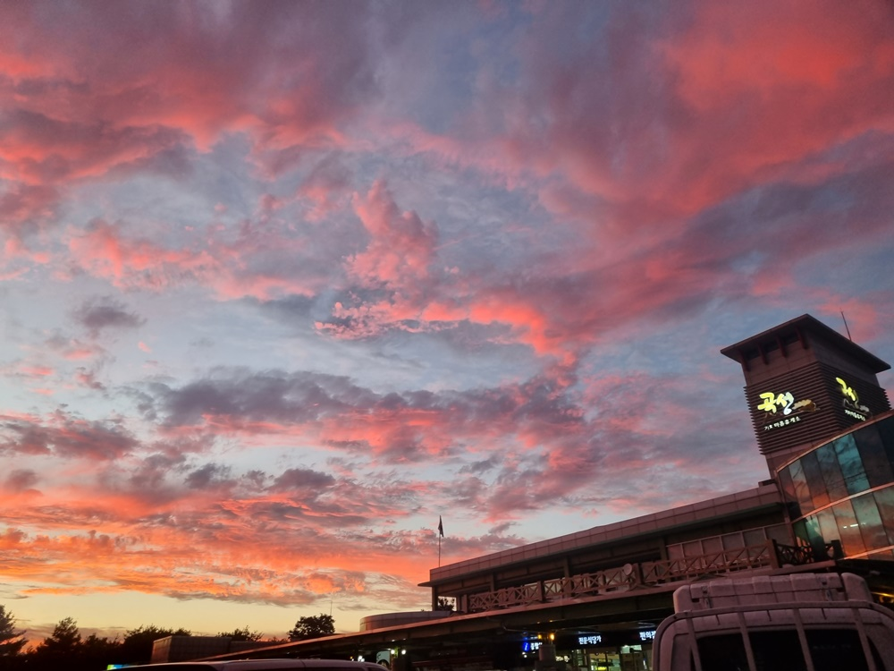
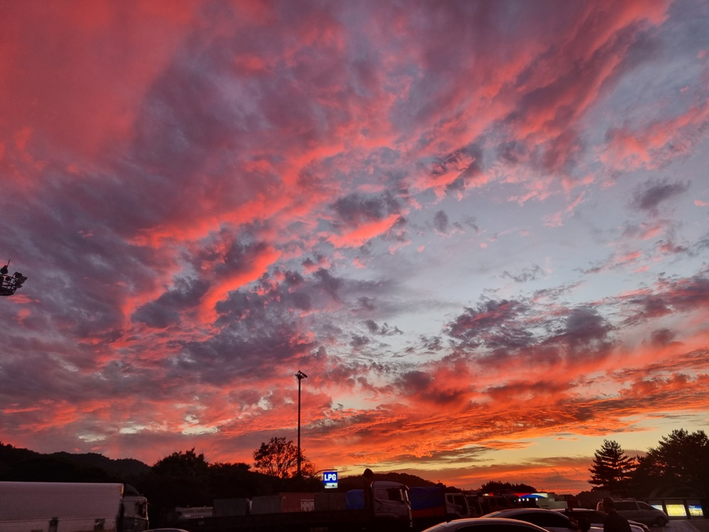
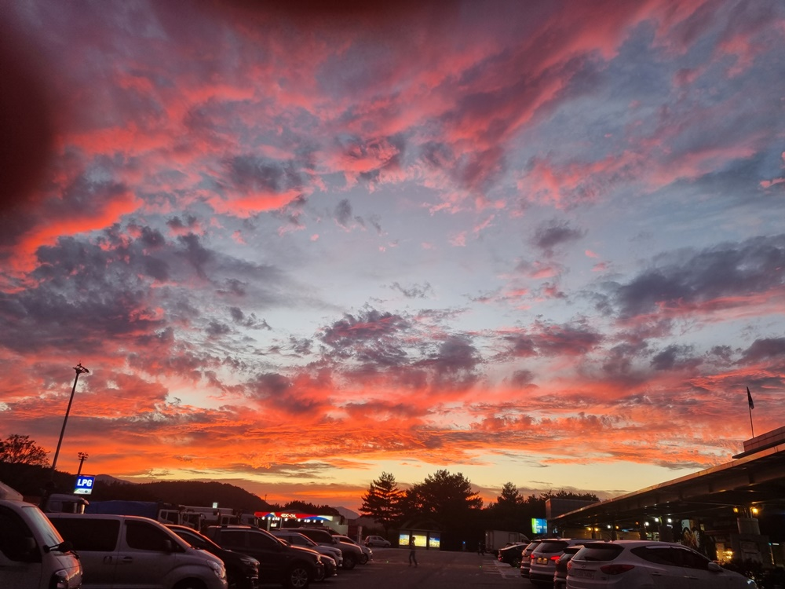
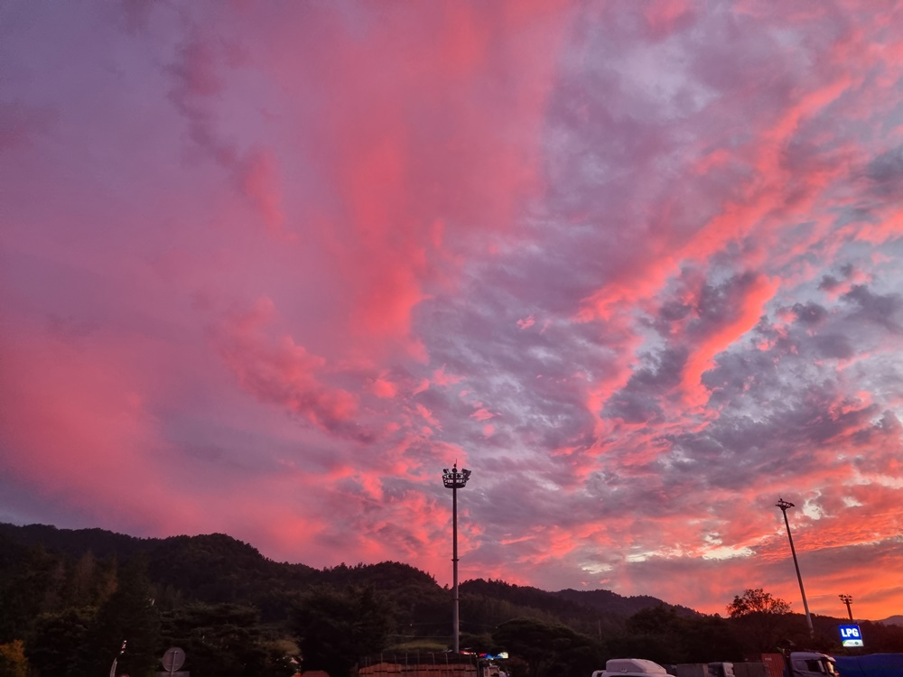
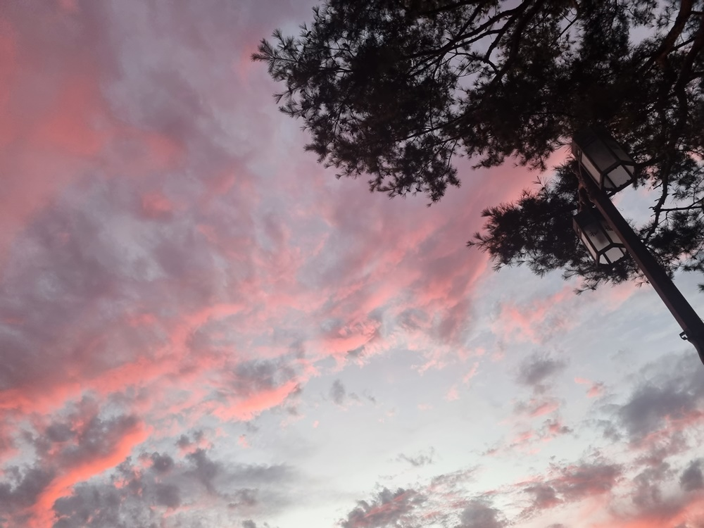

어제 순천지역 다녀오는 길에 유난히 붉게 빛나는 저녁노을에 깜짝놀랐다.
사라지면 어쩌나~
조금 속도를 내어 곡성 휴게소에 차를 멈추었다.
불빛에 타오르는 듯한 아름다움의 절정으로 느껴져 사진을 찍었다.
그리고 다시 출발하여 운전하던 중 자동차 미러로 선명하게 보이는 커다란 무지개를 뒤로 하면서 광주로 왔다.
무지개 사진은 못 찍었지만 마음으로 간직하였다.
9월의 시작~
축복받은 지금의 삶을 생각하면서 스스로 행복을 안겨보는 시간이 되었다.




